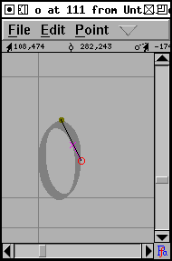
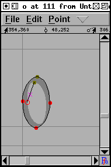
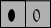

Tutorial #2
- Kreieren eines neuen Schriftsatzes
- Erzeugung eines Bildzeichens (Umrissverfolgung)
- Navigation zu weiteren Bildzeichen
- Auf zum nächsten Bildzeichen (konsistente Richtungen)
- Konsistente Serifen und Stammbreiten
- Erzeugung akzentuierter Bildzeichen
- Erzeugung einer Ligatur
- Untersuchung von Metriken
- Unterschneidung
- Bildzeichenvarianten
- Ankermarkierungen
- Bedingte Eigenschaften
- Überprüfen des Schriftsatzes
- Bitmaps
- Erzeugung
- Schriftsatzfamilien
- Fazit
- Bemerkungen zu verschiedenen Skripten
Navigation zu weiteren Bildzeichen
Die Schriftsatzansicht ermmöglicht die Navigation zwischen den Bildzeichen eines Schriftsatzes. Mit Hilfe der Scrollbalken des Fensters kann das gewünschte Zeichen angezeigt werden, mit einem Doppelklick auf dieses wird ein Fenster zur Anzeige dieses Zeichens geöffnet.
Bei Eingabe eines Zeichens auf der Tastatur wird automatisch zu diesem Zeichen gesprungen.
Da einige Zeichensätze sehr groß sind (chinesische, japanische
und koreanische Zeichensätze enthalten tausende oder sogar
zigtausende von Zeichen), ist für diese Fälle das Scrollen
in der Schriftsatzansicht eine sehr ineffiziente Methode zur
Navigation zu bestimmten Zeichen. Mit Hilfe des Befehls
Ansicht->Gehe zu ...
kann über ein einfaches Dialogfenster zu dem Zeichen
gesprungen werden, indem entweder dessen Name oder Code
angegeben wird.
Im Falle eines Unicodeschriftsatzes ermöglicht der Dialog
auch das Finden eines Zeichen über den Blocknamen (z.B.
"Hebräisch" anstelle von "Aleph").
Die einfachste Navigationsmethode ist es zum nächsten oder
vorherigen Zeichen zu gehen. Die Befehle
Anzeige->Nächstes Zeichen und
Anzeige->Vorheriges Zeichen ermöglichen
dies.
Erzeugen des Buchstaben "o" -- konsistente Richtungen
Im vorherigen Beispiel füllte die Bildvorlage für das Zeichen den Hintergrund aus, und wurde dann automatisch in FontForge beim Import skaliert. Normalerweise hat der Anwender beim Erstellen der Vorlage eine Vorstellung wieviel Leerraum um das Zeichen herum sein sollte. Wenn die Vorlage exakt ein em hoch ist, bringt FontForge diese automatisch in die korrekte Größe. In den folgende Beispielen haben alle Bildvorlagen die richtige Menge an Leerraum um die Zeichen herum um perfekt in ein "em" zu passen.
Für das nächste Beispiel wird mit einem Doppelklick auf das "o" die Zeichenansicht geöffnet und hier hinein die Datei "o_Ambrosia.png" importiert.
 |
 |  |  |
Zu beachten ist, daß der erste Umriss im Uhrzeigersinn und der zweite gegen den Uhrzeigersinn gezeichnet wurde. Dieser Wechsel in der Zeichenrichtung ist wichtig. Sowohl PostScript also auch TrueType erfordern, daß die äussere Begrenzung eines Zeichens in einer bestimmten Richtung gezeichnet wird (diese sind für diese beiden Standards genau in der jeweils entgegengesetzten Richtung). Innerhalb von FontForge müssen alle äusseren Begrenzungen im Uhrzeigersinn gezeichnet werden, während die inneren Begrenzungen gegen den Uhrzeigersinn gezeichnet werden müssen.
Wird versehentlich vergessen, die inneren und äusseren Begrenzungen in entgegengesetzten Richtungen zu zeichnen, kann es zu Ergebnissen wie hier im Beispiel auf der linken Seite angezeigt kommen:  Wird versäumt, die äussere Kontur im Uhrzeigersinn zu zeichnen, sind die Fehler weniger auffällig, im allgemeinen führt dies zu einer weniger attraktiven Rasterung des Zeichens.
TECHNISCH UND VERWIRREND: Das exakte Verhalten von Rasteralgorithmen variiert. Frühe PostScript-Rasteralgorithmen verwendeten eine "non-zero winding number"-Regel, während neuere die "even-odd"-Regel verwenden. Bei TrueType kommt die "non-zero"-Regel zur Anwendung. Im gezeigten Beispiel wurde die "non-zero" rule beschrieben. Die "even-odd"-Regel würde das "o" unabhängig von der Richtung der Pfade korrekt darstellen (obwohl u.U. leichte Probleme mit dem Hinting auftreten können).
Beim Füllen besagt die "even-odd"-Regel, daß vom aktuellen Pixel ausgehend in jede Richtung eine Linie mit unendlicher Länge gezeichnet wird und die Anzahl der Schnittpunkte mit der Kontur gezählt wird. Wenn diese Zahl gerade ist, wird das Pixel nicht gefüllt. Bei der "non-zero winding number"-Regel werden ebenfals Linien gezeichnet, Schnittpunkte mit im Uhrzeigersinn gezeichneten Konturen tragen 1 zur Summe der Schnittpunkte bei, bei einem Schnittpunkt mit einer gegen den Uhrzeigersinn gezeichneten Kontur wird 1 abgezogen. Bei einer Summe von 0 wird das Pixel nicht gefüllt, bei allen anderen Ergebnissen wird es gefüllt.
Der Befehl Element->Richtung korrigieren
analysiert die selektierte Kontur, bestimmt, ob es eine äussere
oder innere Kontur ist und invertiert diese falls diese in
der falschen Richtung gezeichnet wurde.
-- Vorherige Seite -- Inhalt -- Nächste Seite --